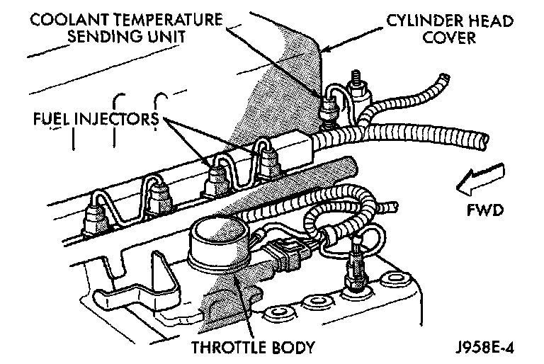

Temperature Sensor (Gauge): Testing and Inspection
COOLANT TEMPERATURE GAUGE
If the problem being diagnosed is related to gauge accuracy, be certain to confirm that the problem is with the gauge and not with cooling system performance. The actual engine coolant temperature should be checked with a test gauge or thermometer and compared to the gauge readings before you proceed with gauge diagnosis. Refer to Wiring Diagrams for circuit descriptions and diagrams.
WARNING: ON VEHICLES EQUIPPED WITH AIRBAGS, Refer to PASSIVE RESTRAINT SYSTEMS BEFORE ATTEMPTING STEERING WHEEL, STEERING COLUMN, OR INSTRUMENT PANEL COMPONENT DIAGNOSIS OR SERVICE. FAILURE TO TAKE THE PROPER PRECAUTIONS COULD RESULT IN ACCIDENTAL AIRBAG DEPLOYMENT AND POSSIBLE PERSONAL INJURY.
Diagnosis of the coolant temperature sensor and circuit, and/or the powertrain control module should be performed with the DRB scan tool.
The diagnosis found here addresses an inoperative gauge condition.
If the problem being diagnosed is related to gauge accuracy, be certain to confirm that the problem is with the gauge and not with cooling system performance.
The actual engine coolant temperature should be checked with a test gauge or thermometer and compared to the gauge readings before you proceed with gauge diagnosis.
1. Turn the ignition switch to the ON position.
Typical - Coolant Temperature Switch/Sending Unit:

Disconnect the coolant temperature sending unit connector as shown.
The gauge needle should move to the low end of the gauge scale.
If OK, go to Step 2.
If not OK, go to Step 3.
2. Install a jumper wire from the sending unit connector to a good ground.
The gauge needle should move to the high end of the gauge scale.
If OK, replace the faulty sending unit.
If not OK, remove the jumper wire and go to Step 3.
3. Turn the ignition switch to the OFF position.
Disconnect the battery negative cable.
Remove the instrument cluster bezel and the cluster assembly.
Disconnect the gauge cluster connector.
4. Probe the engine coolant temperature (ECT) gauge sensor signal circuit cavity of the cluster connector.
Check for continuity to a good ground. There should be no continuity.
If OK, go to Step 5.
If not OK, repair the short circuit as required.
5. Still probing the engine coolant temperature (ECT) gauge sensor signal circuit cavity of the cluster connector, check for continuity to the sending unit connector. There should be continuity.
If OK, replace the faulty gauge.
If not OK, repair the open circuit as required.